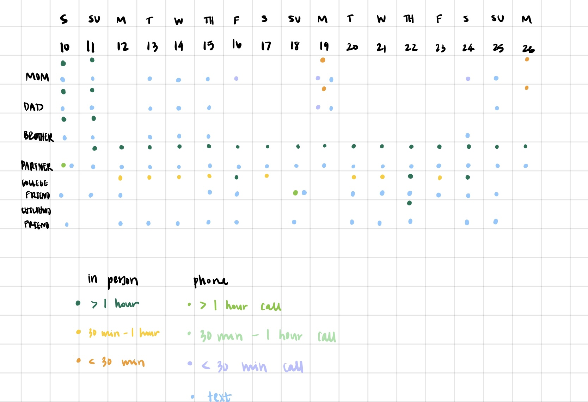
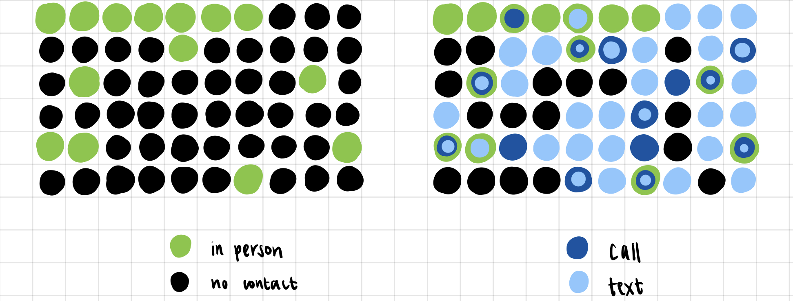
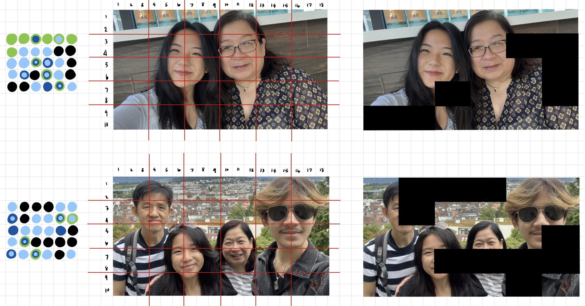
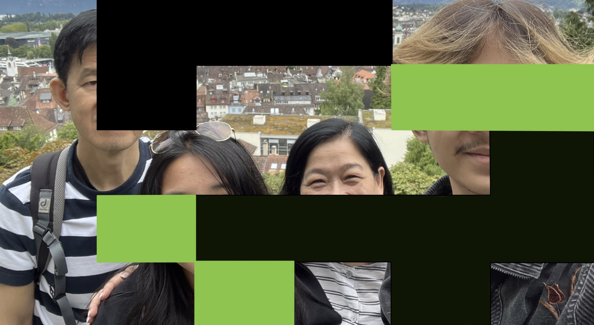
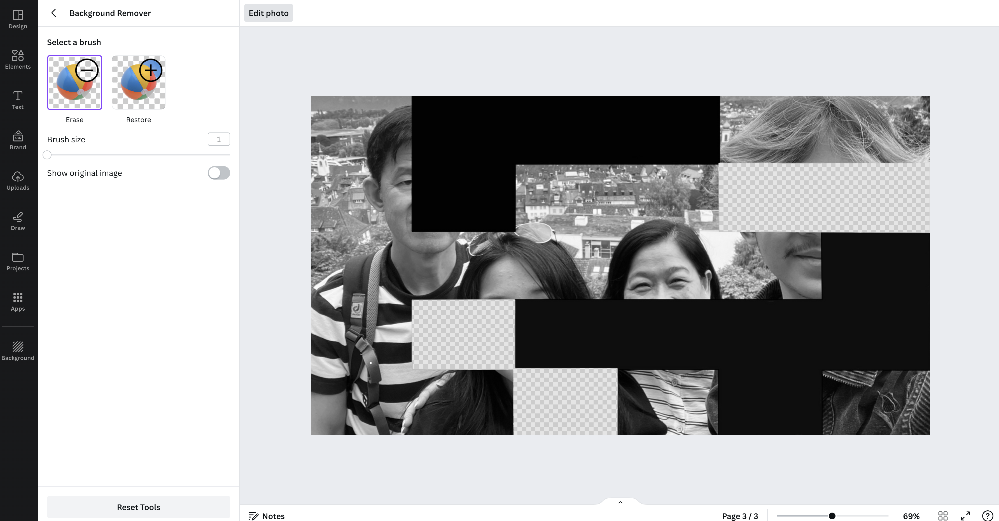
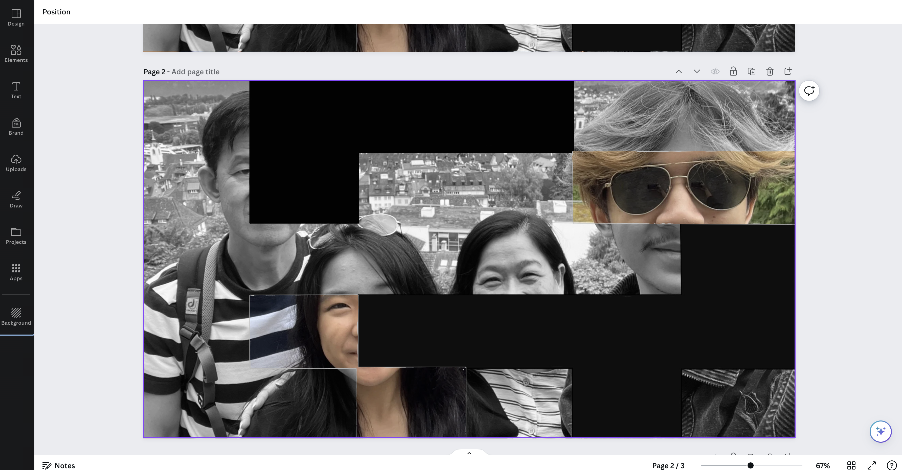
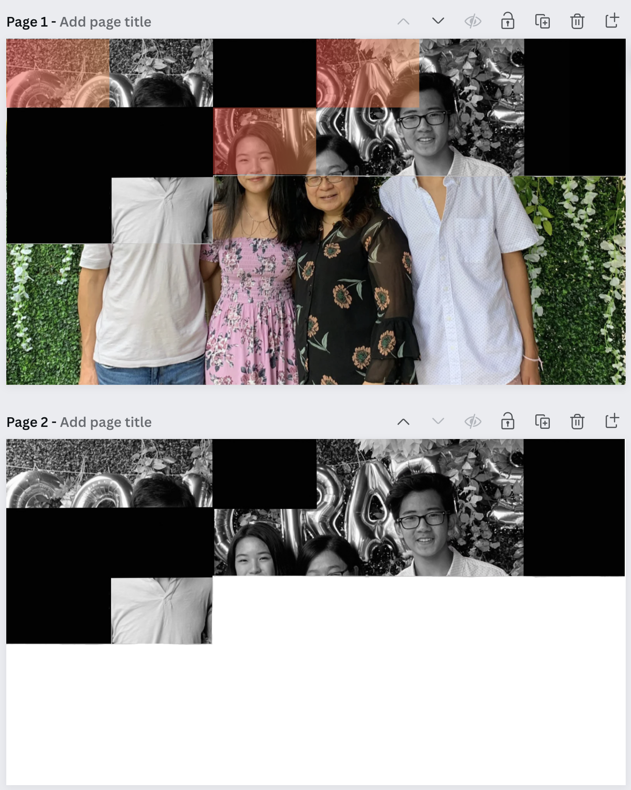

I began the design process by evaluating all of the data that are automatically collected about myself such as my browser history, Spotify listening history, liked TikToks, Amazon purchases, workout history, and app screen time, and thought about how I could visually interestingly represent them. After reading Data Feminism “What Gets Counted Counts”, its emphasis on the importance of considering what data is collected, how it is used, and how it shapes our decisions and understanding prompted me to reflect on what data I would like to know about myself but is not currently being captured directly.
Something that is currently on my mind is that I need to prioritize spending time with my family and friends before I relocate across the country after graduation. I strive to be more intentional about maintaining regular communication with them post-move, but I recognize a tendency to be less proactive when I’m busy, as evidenced by my current behavior at school. To gain a better understanding of my current communication habits, I began by tracking how often I spend time and communicate with the closest people in my life: my family, best friend in college, best friend from childhood, and partner.
I collected data from 4 main sources: my phone carrier’s website to view call logs, my text thread, Google Calendar, and my photo album. Together, these sources allowed me to determine when I communicated with each person via spending time together in person, phone calls, text messages, and periods in which there was no contact from either party. Specifically, I downloaded the call logs from AT&T to view all call history and scrolled through my text thread with each person to see if we had a conversation (my phone does not automatically delete any conversations). I keep a detailed Google calendar so I was able to use that to determine who I spent time with that day. In the case that I forgot to note down events on my calendar, I referred to my photo album to see my location and what I was doing that day which gives insight into who I spent time with. I added the information to a spreadsheet, simply indicating yes or no for each type of contact for each day for 2 weeks in February. The image below illustrates a sketch of this information with an approximation of the duration of contact.
This initial sketch highlighted a stark contrast in how much more regularly I communicated with my partner and close friends compared to my family. While I found the juxtaposition interesting, I decided to center my project on my contact with my family due to the disparity between days with contact and without contact. Upon closer examination of my immediate family members – my mom, dad, and brother – I noticed that much of our communication involved all three of them together. As a result, I decided to focus my data collection efforts on my mom, as I frequently call her to chat with the whole family.
I also expanded the time frame for data collection from two weeks to two months from January 2024 to February 2024. On a new spreadsheet, I tracked the call frequency and duration, text frequency, and if I saw my mom in person (and by extension, the rest of my family). I then created the two visualizations below.
I first created the visualization on the left to highlight the alarming amount of days I did not see my family in person. The visualization on the right is the second iteration of this concept but also includes the two types of phone communication. I liked that by utilizing this dot concept, I was able to quickly glance at the visualization and get a sense of how much contact I had with my mom. However, I found it to be impersonal.
In my next iteration, I had the idea to incorporate pictures of my family as part of the final design. I began by separating the 60 dots into two groups of 30 to illustrate January and February data (added January 31st to February to maintain an even number for each month). Next, I found two images featuring my family members and divided them into 30 boxes (arranged in a 5x6 grid) to correspond to each day of the month, mirroring the format of the dots visualization. I then filled in the boxes black for the days I did not have contact with my family, leaving the days with communication unchanged. I liked this visualization as it reminded me of how one would cut out portions of a picture to add to a scrapbook – something my mom likes to make to remember each year. However, I wanted to also differentiate between the types of communication.
In this last iteration, I established a hierarchy of contact methods, ranking them from highest to lowest based on the depth of conversation that usually occurs: 1) in-person, 2) phone call, 3) text message, and 4) no contact. Each box in the image is modified based on the highest-ranked communication method for that day, although multiple methods could have occurred. I chose to only illustrate one type of communication method rather than all types that occurred that day to prevent the illustration from being too cluttered.
Days involving in-person communication remain unaltered (portion of the picture is in color), days with phone calls are filtered in orange (because the effect reminds me of old film pictures), days with texts are in black and white, and days with no contact are blacked out. I chose these modifications because as communication fades, so does the color of the photo.
To create the final design, I had to create two layers of the photo. The bottom layer will be the original photo in color. The top layer will be a black-and-white version of the image in which portions of this image are erased to reveal the color layer underneath it. To more easily see which portions I needed to erase, I colored in the boxes that had in-person communication with in green. Then, I converted this image to black and white using Apple’s built-in photo function.
In Canva, I used the background eraser tool to erase the indicated portions.
Then, I overlaid the black and white photo on top of the original photo. Lastly, I added transparent orange boxes to create a filter.
I wanted to include more data in my final design so I repeated this process with the December 2023 data.
The final design includes 90 days of communication data with my mom represented by 3 family photos.